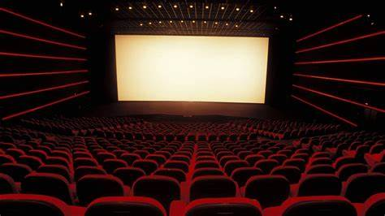

Inicio
Soy Maday Gutiérrez, tengo 20 años y actualmente estoy estudiando la carrera de Administración en Negocios Internacionales. Me considero una persona curiosa y apasionada por aprender sobre el mundo y las distintas maneras en que las culturas interactúan a través de los negocios. Uno de mis hobbies favoritos es ir al cine, ya que encuentro en ello una forma de desconectar del estrés diario y disfrutar de un momento de tranquilidad. Amo la manera en que las películas pueden transportarnos a otros mundos, presentarnos perspectivas diferentes y contarnos historias llenas de emociones y aprendizajes. Para mí, el cine no solo es entretenimiento, sino una puerta a la reflexión y a la creatividad, un espacio donde se combinan arte y narrativas poderosas que me inspiran tanto en lo personal como en lo profesional.
